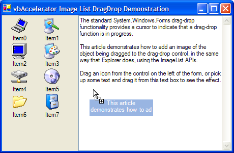

ImageListDragCS (56K)
ImageListDragCS (56K)
 6 Sep 2003
6 Sep 2003
First Posted

Sophisticated Drag-Drop Images
Add customisable Explorer-Style drag-drop images to .NET Framework applications using the ImageList API
The standard .NET Framework drag-drop functionality provides a cursor to indicate that a drag-drop function is in progress. This article demonstrates how to add an image of the object being dragged to the drag-drop control, in the same way that Explorer does using the ImageList APIs.
About ImageList Drag and Drop
The ComCtl32.DLL ImageList implementation provides functions for dragging an image on the screen. The dragging functions move an image smoothly, in color, and without any flashing of the cursor. In addition, when you use the functions under Windows 2000 or XP the drag image is also rendered translucently and preserves any alpha shadows which greatly improves the visual appearance.
Unfortunately although the .NET Framework ImageList class is a thin wrapper on this implementation it doesn't expose any of the methods. However, there are only 8 API functions needed and they can easily be wrapped into a re-usable class which encapsulates the Unmanaged code.
Using the Sample Code
The main class in the sample is ImageListDrag. To use the class you follow these steps:
- Create an instance of the class
ImageListDrag imageListDrag = new ImageListDrag();
- Tell the class which ImageList to use
imageListDrag.hImageList = ils.Handle();
- Set the drag image to draw during dragging
Typically you start a drag operation when specific conditions are met during a MouseDown action. Once you know a drag operation is needed, you tell the class the index of the image in the ImageList to draw and the position to offset the drag image from the cursor in pixels using the StartDrag method. Once the drag operation has completed, call the CompleteDrag method to clear the image:
protected override void OnMouseDown(MouseEventArgs e) { // ... code to determine if drag needed // if it is, then start the operation: imageListDrag.StartDrag(iconIndex, -8, -8); this.DoDragDrop(data, DragDropEffects.Move); imageListDrag.CompleteDrag(); } - Update the drag image as dragging is performed
The GiveFeedback event is called repeatedly during a drag operation whenever the item being dragged is over a drop target.
protected override void OnGiveFeedback(GiveFeedbackEventArgs e) { // Raise the GiveFeedback event base.OnGiveFeedback(e); // Draw the drag image: ilsDrag.DragDrop(); }During this event you can also detect which object the mouse is over and hide or show the drag image using the HideDragImage method.
That's pretty much it for creating a standard drag image. If you want to update the contents of the window you're dragging over, then you should call HideDragImage(true) prior to drawing and HideDragImage(false) once complete. This ensures you don't overdraw the drag cursor.
Creating Custom Drag Images
Since the drag image is sourced from an image within an ImageList, it is straightforward to create custom drag images using the System.Drawing.Graphics methods just prior to starting the drag operation. The sample code demonstrates how to do this with the TextBox control, rendering a portion of the selected text into the first image of an ImageList used for dragging:
private void constructDragImage()
{
System.Windows.Forms.ImageList ils = this.ImageList;
// Clear images in image list:
ils.Images.Clear();
// ImageList is buggy, need to ensure we do this:
IntPtr ilsHandle = ils.Handle;
// Create the bitmap to hold the drag image:
Bitmap bitmap = new Bitmap(ils.ImageSize.Width, ils.ImageSize.Height);
// Get a graphics object from it:
Graphics gfx = Graphics.FromImage(bitmap);
// Default fill the bitmap with black:
gfx.FillRectangle(Brushes.Black, 0, 0, bitmap.Width, bitmap.Height);
// Draw text in highlighted form:
StringFormat fmt = new StringFormat(StringFormatFlags.LineLimit);
fmt.Alignment = StringAlignment.Center;
SizeF size = gfx.MeasureString(this.SelectedText, this.Font, bitmap.Width, fmt);
float left = 0F;
if (size.Height> bitmap.Height)
{
size.Height = bitmap.Height;
}
if (size.Width < bitmap.Width)
{
left = (bitmap.Width - size.Width)/2F;
}
RectangleF textRect = new RectangleF(
left, 0F, size.Width, size.Height);
gfx.FillRectangle(SystemBrushes.Highlight, textRect);
gfx.DrawString(this.SelectedText, this.Font, SystemBrushes.HighlightText,
textRect, fmt);
fmt.Dispose();
// Add the image to the ImageList:
ils.Images.Add(bitmap, Color.Black);
// Clear up the graphics object:
gfx.Dispose();
// Clear up the bitmap:
bitmap.Dispose();
}
Note that a lot of code during a drag-drop event in the .NET Framework runs on a differnt thread to the main UI thread. By default, exceptions thrown on the background thread don't get reported unless you explicitly catch them - beware!
Limitations
This section discusses some of the issues that can occur when using drag-drop images and how to work around them.
Painting Issues
The ImageList SDK notes that when drawing the drag image you can get issues with updates or screen painting unless you use the ImageList_DragLeave API function to hide the drag image whilst the painting occurs (which is what the HideDragImage method in the class does). Unfortunately, if you don't own the control that's being painted doing this isn't really an option. There are three things you can do to help avoid this being a problem:
- Draw the Drag Image Underneath the Cursor
If you draw the drag image below the cursor, then its unlikely that any painting in the control will occur in the area of the drag image. To do this, use negative values for the xOffset and yOffset parameters of the StartDrag method.
- Force windows to repaint to clear any left over effects when dropping
After a drop it is possible that the control's display will be affected. For example, dropping text on a text box causes the new text to be inserted, and some of that may occur under the drag image. You can fix any artifacts by calling the Framework's Invalidate and Update methods. If the Window is particularly tricky then the Windows RedrawWindow API call can be used.
private struct RECT { public int left; public int top; public int right; public int bottom; } [DllImport("user32")] private extern static int RedrawWindow ( IntPtr hwnd, ref RECT lprcUpdate, IntPtr hrgnUpdate, int fuRedraw); [DllImport("user32")] private extern static int ( IntPtr hwnd, ref RECT lpRect); private const int RDW_UPDATENOW = 0x100; private const int RDW_INVALIDATE = 0x1; private const int RDW_ALLCHILDREN = 0x80; private const int RDW_ERASE = 0x4; .. // Assuming the handle variable contains your Window's handle: RECT tR = new RECT(); GetWindowRect(handle, ref tR); tR.right -= tr.left; tR.left = 0; tR.bottom -= tr.top; tR.top = 0; RedrawWindow(handle, ref tR, IntPtr.Zero, RDW_UPDATENOW | RDW_INVALIDATE | RDW_ALLCHILDREN | RDW_ERASE) - Drag and Drop in the .NET Framework
In order to display the drag drop image, you need to get some sort of event as the mouse moves. If the object that the mouse is over has AllowDrop set to true then the GiveFeedback is fired whenever the mouse moves (and all the time when it doesn't too!). However, if the object doesn't have it set then you won't get any events. This means that the drag image disappears as you move the mouse over that object. There are two ways of working around this:
- Set all objects on the form to AllowDrop = true at design-time or run-time. This ensures the drag image is always displayed, but note that you may also need to code the OnDragOver method for every object to ensure DragDropEffects.None is returned to ensure the user gets a visual cue that they can't drop on that object.
- Use a Windows Mouse Hook to capture all mouse events during the duration of the drag. This solves the issue completely but can adds complexity to debugging the project.
Conclusion
The ImageListDrag class allows you to add custom drag-images to .NET Framework applications and is relatively simple to use, provided some care is taken placing the drag image, only drawing over known objects and ensuring all objects on the form respond to drag events.